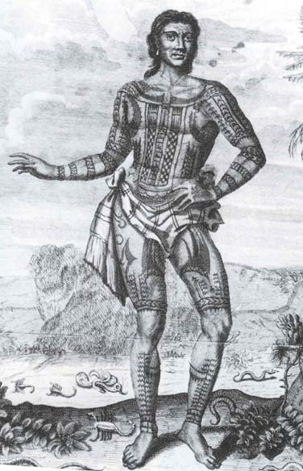

Historical and Modern Body Markings and Tattoos from Around the World
Tattoos are not simply for sailors. Modern tattoo art is growing in popularity with the widespread availability of sanitary professional tattoo parlors. Chances are you, or someone you know, has some ink - a 2008 study by the Pew Research Center concludes that one in three adults between the ages of 18 and 25 has a tattoo.
Tattoo and body art act as expressions of personality and passions, experience and history, and the history of tattoos is long and varied. Disparate cultures across the globe have used, and still use, tattoos as a form of cultural identity and symbol of social standing.
The art of tattooing has ancient roots, having been in practice since at least the 4th millennium B.C.E. Mummified remains have been found in Eurasia, Siberia and Egypt bearing tattoos, some of which are believed to have been administered as a healing practice. One mummy, labeled the Siberian Ice Maiden, found in 1993, shows evidence of elaborate patterns of chimeric animals covering her left arm and wrist. The pre-Christian Scottish Picts were also notorious for their detailed and extensive war-inspired dark blue markings, with ink made from a copper-based pigment.
In this exhibit are displayed the tribal tattoos of the Maori of New Zealand, the sak yant sacred tattoos of Thailand, and the scarification rituals of the Ga'anda and Tabwa women, the secretive irezumi tradition of the Japanese, the underground culture of tattooing in the Russian prison system, and relatively modern use of tattoos and body art in the Western world.
Peruse the selection to find inspiration for your next ink. More books on tattooing can be found from GN 419.15 to GT 2346 in our Stacks and Quarto sections.
In Southern India, permanent tattoos are called pachakutharathu. It was very common in south India, especially Tamil Nadu, before 1980. In northern India, permanent tattoos are called godna. Tattoos have been used as cultural symbols among many tribal populations, as well as the caste-based Hindu population of India.
Henna was used as a bodyart dye, called Mehndi, in ancient India. It still remains popular today in the Indian subcontinent, and its use now encompasses the entire Middle East and North Africa. Evidence only supports the use of Henna as a hair dye (and a medicinal plant) in ancient Egypt.
In Egypt the majority of tattoos were found on females. It would tell you the status of that individual. They had tattoos for healing, religion, and as a form of punishment.
Tattoos were probably also used in ancient medicine as part of the treatment of the patient. In 1898, Daniel Fouquet, a medical doctor of Cairo, wrote an article on "medical tattooing" practices in Ancient Egypt, in which he describes the tattooed markings on the female mummies found at the Deir el-Bahari site. He speculated that the tattoos and other scarifications observed on the bodies may have served a medicinal or therapeutic purpose: "The examination of these scars, some white, others blue, leaves in no doubt that they are not, in essence, ornament, but an established treatment for a condition of the pelvis, very probably chronic pelvic peritonitis.
The first documented professional tattoo artist in the USA was Martin Hildebrandt, a German immigrant who arrived in Boston, Massachusetts in 1846. Between 1861 and 1865, he tattooed soldiers on both sides in the American Civil War. The first documented professional tattooist in Britain was established in Liverpool in the 1870s. Tattooing was an expensive and painful process, and by the 1870s had become a mark of wealth for the crowned heads of Europe.[14]
Since the 1970s, tattoos have become a mainstream part of global and Western fashion, common among both sexes, to all economic classes, and to age groups from the later teen years to middle age. For many young Americans, the tattoo has taken on a decidedly different meaning than for previous generations. The tattoo has "undergone dramatic redefinition" and has shifted from a form of deviance to an acceptable form of expression. In 2010, 25% of Australians under age 30 had tattoos. Mattel released a tattooed Barbie doll in 2011, which was widely accepted, although it did attract some controversy.
Tattoos have experienced a resurgence in popularity in many parts of the world, particularly in Europe, Japan, and North and South America. The growth in tattoo culture has seen an influx of new artists into the industry, many of whom have technical and fine arts training. Coupled with advancements in tattoo pigments and the ongoing refinement of the equipment used for tattooing, this has led to an improvement in the quality of tattoos being produced.
During the 2000s, the presence of tattoos became evident within pop culture, inspiring television shows such as A&E's Inked and TLC's Miami Ink and LA Ink. The decoration of blues singer Janis Joplin with a wrist let and a small heart on her left breast, by the San Francisco tattoo artist Lyle Tuttle, has been called a seminal moment in the popular acceptance of tattoos as art. Formal interest in the art of the tattoo became prominent in the 1970s through the beginning of the 21st century. In addition, many celebrities have made tattoos more acceptable in recent years.
Contemporary art exhibitions and visual art institutions have featured tattoos as art through such means as displaying tattoo flash, examining the works of tattoo artists, or otherwise incorporating examples of body art into mainstream exhibits. One such 2009 Chicago exhibition, Freaks & Flash, featured both examples of historic body art as well as the tattoo artists who produced it.
Over the past three decades Western tattooing has become a practice that has crossed social boundaries from "low" to "high" class along with reshaping the power dynamics regarding gender. It has its roots in "exotic" tribal practices of the Native Americans and Japanese, which are still seen in present times. Although tattooing has steadily increased in popularity since the invention of the electric tattoo machine in the 1890s, it was not until the 1960s that the place of tattooing in popular culture radically shifted. The Tattoo Renaissance began in the late 1950s, and was greatly influenced by several artists in particular Lyle Tuttle, Cliff Raven, Don Nolan, Zeke Owens, Spider Webb, and Don Ed Hardy. A second generation of artists, trained by the first, continued these traditions into the 1970s, and included artists such as Bob Roberts, Jamie Summers, and Jack Rudy. In the 1980s, Scholar Arnold Rubin created a collection of works regarding the history of tattoo cultures, publishing them as the ' 'Marks of Civilization' ' (1988). In this, the term "Tattoo Renaissance" was coined, referring to a period marked by technological, artistic, and social change. Wearers of tattoos, as members of the counterculture began to display their body art as signs of resistance to the values of the white, heterosexual, middle-class. The clientele changed from sailors, bikers, and gang members to the middle and upper class. There was also a shift in iconography from the badge-like images based on repetitive pre-made designs known as flash to customized full-body tattoo influenced by Polynesian and Japanese tattoo art, known as sleeves, which are categorized under the relatively new and popular Avant-garde genre. Tattooers transformed into "Tattoo Artists": men and women with fine art backgrounds began to enter the profession alongside the older, traditional tattooists.
As various kinds of social movements progressed bodily inscription crossed class boundaries, and became common among the general public. Specifically, the tattoo is one access point for revolutionary aesthetics of women. Feminist theory has much to say on the subject. "Bodies of Subversion: A Secret History of Women and Tattoo", by Margot Mifflin, became the first history of women's tattoo art when it was released in 1997. In it, she documents women's involvement in tattooing coinciding to feminist successes, with surges in the 1880s, 1920s, and the 1970s. The earliest appearance of tattoos on women were in the circus in the late 1800s. These "Tattooed Ladies" were covered - with the exception of their faces, hands, necks, and other readily visible areas - with various images inked into their skin. In order to lure the crowd, the earliest ladies, like Betty Broadbent and Nora Hildebrandt told tales of captivity; they usually claimed to have been taken hostage by Native Americans that tattooed them as a form of torture. However, by the late 1920s the sideshow industry was slowing and by the late 1990s the last tattooed lady was out of business. Today, women sometimes use tattoos as forms of bodily reclamations after traumatic experiences like abuse or breast cancer. In 2012, tattooed women outnumbered men for the first time in American history - according to a Harris poll, 23% of women in America had tattoos in that year, compared to 19% of men. In 2013, Miss Kansas, Theresa Vail, became the first Miss America contestant to show off tattoos during the swimsuit competition — the insignia of the U.S. Army Dental Corps on her left shoulder and one of the "Serenity Prayer" along the right side of her torso.
On August 2013 William Mullane of London was tattooed with a portrait his late father which used ink mixed with a small portion of his father’s ashes.
In recent years, various lawsuits have arisen in the United States regarding the status of tattoos as a copyrightable art form. However, these cases have either been settled out of court or are currently being disputed, and therefore no legal precedent exists directly on point.
Up Coming
Artist Books
February 23 - March 13, 2015